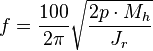

Stepper motor
Frame 1: The top electromagnet (1) is turned on, attracting the nearest teeth of the gear-shaped iron rotor. With the teeth aligned to electromagnet 1, they will be slightly offset from right electromagnet (2).
Frame 2: The top electromagnet (1) is turned off, and the right electromagnet (2) is energized, pulling the teeth into alignment with it. This results in a rotation of 3.6° in this example.
Frame 3: The bottom electromagnet (3) is energized; another 3.6° rotation occurs.
Frame 4: The left electromagnet (4) is energized, rotating again by 3.6°. When the top electromagnet (1) is again enabled, the rotor will have rotated by one tooth position; since there are 25 teeth, it will take 100 steps to make a full rotation in this example.
A stepper motor or step motor or stepping motor is a brushless DC electric motor that divides a full rotation into a number of equal steps. The motor's position can then be commanded to move and hold at one of these steps without any feedback sensor (an open-loop controller), as long as the motor is carefully sized to the application in respect to torque and speed.
Switched reluctance motors are very large stepping motors with a reduced pole count, and generally are closed-loop commutated.
Contents
- 1 Fundamentals of operation
- 2 Types
- 3 Two-phase stepper motors
- 4 Higher-phase count stepper motors
- 5 Stepper motor driver circuits
- 6 Phase current waveforms
- 7 Theory
- 8 Stepper motor ratings and specifications
- 9 Applications
- 10 Stepper motor system
- 11 Advantages/disadvantages of stepper motors
- 12 See also
- 13 References
- 14 External links
Fundamentals of operation[edit]
DC brushed motors rotate continuously when DC voltage is applied to their terminals. The stepper motor is known by its property to convert a train of input pulses (typically square wave pulses) into a precisely defined increment in the shaft position. Each pulse moves the shaft through a fixed angle.
Stepper motors effectively have multiple "toothed" electromagnets arranged around a central gear-shaped piece of iron. The electromagnets are energized by an external driver circuit or a microcontroller. To make the motor shaft turn, first, one electromagnet is given power, which magnetically attracts the gear's teeth. When the gear's teeth are aligned to the first electromagnet, they are slightly offset from the next electromagnet. This means that when the next electromagnet is turned on and the first is turned off, the gear rotates slightly to align with the next one. From there the process is repeated. Each of those rotations is called a "step", with an integer number of steps making a full rotation. In that way, the motor can be turned by a precise angle.
Types[edit]
There are four main types of stepper motors:[1]
- Permanent magnet stepper (can be subdivided into 'tin-can' and 'hybrid', tin-can being a cheaper product, and hybrid with higher quality bearings, smaller step angle, higher power density)
- Hybrid synchronous stepper
- Variable reluctance stepper
- Lavet type stepping motor
Permanent magnet motors use a permanent magnet (PM) in the rotor and operate on the attraction or repulsion between the rotor PM and the stator electromagnets. Variable reluctance (VR) motors have a plain iron rotor and operate based on the principle that minimum reluctance occurs with minimum gap, hence the rotor points are attracted toward the stator magnet poles. Hybrid stepper motors are named because they use a combination of PM and VR techniques to achieve maximum power in a small package size.
Two-phase stepper motors[edit]
There are two basic winding arrangements for the electromagnetic coils in a two phase stepper motor: bipolar and unipolar.
Unipolar motors[edit]
A unipolar stepper motor has one winding with center tap per phase. Each section of windings is switched on for each direction of magnetic field. Since in this arrangement a magnetic pole can be reversed without switching the direction of current, the commutation circuit can be made very simple (e.g., a single transistor) for each winding. Typically, given a phase, the center tap of each winding is made common: giving three leads per phase and six leads for a typical two phase motor. Often, these two phase commons are internally joined, so the motor has only five leads.
A micro controller or stepper motor controller can be used to activate the drive transistors in the right order, and this ease of operation makes unipolar motors popular with hobbyists; they are probably the cheapest way to get precise angular movements.
(For the experimenter, the windings can be identified by touching the terminal wires together in PM motors. If the terminals of a coil are connected, the shaft becomes harder to turn. one way to distinguish the center tap (common wire) from a coil-end wire is by measuring the resistance. Resistance between common wire and coil-end wire is always half of what it is between coil-end and coil-end wires. This is because there is twice the length of coil between the ends and only half from center (common wire) to the end.) A quick way to determine if the stepper motor is working is to short circuit every two pairs and try turning the shaft, whenever a higher than normal resistance is felt, it indicates that the circuit to the particular winding is closed and that the phase is working.
Bipolar motors[edit]
Bipolar motors have a single winding per phase. The current in a winding needs to be reversed in order to reverse a magnetic pole, so the driving circuit must be more complicated, typically with an H-bridge arrangement (however there are several off-the-shelf driver chips available to make this a simple affair). There are two leads per phase, none are common.
Static friction effects using an H-bridge have been observed with certain drive topologies.[2]
Dithering the stepper signal at a higher frequency than the motor can respond to will reduce this "static friction" effect.
Because windings are better utilized, they are more powerful than a unipolar motor of the same weight. This is due to the physical space occupied by the windings. A unipolar motor has twice the amount of wire in the same space, but only half used at any point in time, hence is 50% efficient (or approximately 70% of the torque output available). Though a bipolar stepper motor is more complicated to drive, the abundance of driver chips means this is much less difficult to achieve.
An 8-lead stepper is wound like a unipolar stepper, but the leads are not joined to common internally to the motor. This kind of motor can be wired in several configurations:
- Unipolar.
- Bipolar with series windings. This gives higher inductance but lower current per winding.
- Bipolar with parallel windings. This requires higher current but can perform better as the winding inductance is reduced.
- Bipolar with a single winding per phase. This method will run the motor on only half the available windings, which will reduce the available low speed torque but require less current
Higher-phase count stepper motors[edit]
Multi-phase stepper motors with many phases tend to have much lower levels of vibration.[3] While they are more expensive, they do have a higher power density and with the appropriate drive electronics are often better suited to the application[citation needed].
Stepper motor driver circuits[edit]
Stepper motor performance is strongly dependent on the driver circuit. Torque curves may be extended to greater speeds if the stator poles can be reversed more quickly, the limiting factor being the winding inductance. To overcome the inductance and switch the windings quickly, one must increase the drive voltage. This leads further to the necessity of limiting the current that these high voltages may otherwise induce.
L/R driver circuits[edit]
L/R driver circuits are also referred to as constant voltage drives because a constant positive or negative voltage is applied to each winding to set the step positions. However, it is winding current, not voltage that applies torque to the stepper motor shaft. The current I in each winding is related to the applied voltage V by the winding inductance L and the winding resistance R. The resistance R determines the maximum current according to Ohm's law I=V/R. The inductance L determines the maximum rate of change of the current in the winding according to the formula for an inductor dI/dt = V/L. Thus when controlled by an L/R drive, the maximum speed of a stepper motor is limited by its inductance since at some speed, the voltage U will be changing faster than the current I can keep up. In simple terms the rate of change of current is L / R (e.g. a 10 mH inductance with 2 ohms resistance will take 5 ms to reach approx 2/3 of maximum torque or around 24 ms to reach 99% of max torque). To obtain high torque at high speeds requires a large drive voltage with a low resistance and low inductance.
With an L/R drive it is possible to control a low voltage resistive motor with a higher voltage drive simply by adding an external resistor in series with each winding. This will waste power in the resistors, and generate heat. It is therefore considered a low performing option, albeit simple and cheap.
Chopper drive circuits[edit]
Chopper drive circuits are referred to as constant current drives because they generate a somewhat constant current in each winding rather than applying a constant voltage. On each new step, a very high voltage is applied to the winding initially. This causes the current in the winding to rise quickly since dI/dt = V/L where V is very large. The current in each winding is monitored by the controller, usually by measuring the voltage across a small sense resistor in series with each winding. When the current exceeds a specified current limit, the voltage is turned off or "chopped", typically using power transistors. When the winding current drops below the specified limit, the voltage is turned on again. In this way, the current is held relatively constant for a particular step position. This requires additional electronics to sense winding currents, and control the switching, but it allows stepper motors to be driven with higher torque at higher speeds than L/R drives. Integrated electronics for this purpose are widely available.
Phase current waveforms[edit]
A stepper motor is a polyphase AC synchronous motor (see Theory below), and it is ideally driven by sinusoidal current. A full step waveform is a gross approximation of a sinusoid, and is the reason why the motor exhibits so much vibration. Various drive techniques have been developed to better approximate a sinusoidal drive waveform: these are half stepping and microstepping.
Wave drive (one phase on)[edit]
In this drive method only a single phase is activated at a time. It has the same number of steps as the full step drive, but the motor will have significantly less than rated torque. It is rarely used. The animated figure shown above is a wave drive motor. In the animation, rotor has 25 teeth and it takes 4 steps to rotate by one tooth position. So there will be 25*4 = 100 steps per full rotation and each step will be 360/100 = 3.6 degrees.
Full step drive (two phases on)[edit]
This is the usual method for full step driving the motor. Two phases are always on so the motor will provide its maximum rated torque. As soon as one phase is turned off, another one is turned on. Wave drive and single phase full step are both one and the same, with same number of steps but difference in torque.
Half stepping[edit]
When half stepping, the drive alternates between two phases on and a single phase on. This increases the angular resolution. The motor also has less torque (approx 70%) at the full step position (where only a single phase is on). This may be mitigated by increasing the current in the active winding to compensate. The advantage of half stepping is that the drive electronics need not change to support it. In animated figure shown above, if we change it to half stepping, then it will take 8 steps to rotate by 1 teeth position. So there will be 25*8 = 200 steps per full rotation and each step will be 360/200 = 1.8°. Its angle per step is half of the full step.
Microstepping[edit]
What is commonly referred to as microstepping is often "sine cosine microstepping" in which the winding current approximates a sinusoidal AC waveform. Sine cosine microstepping is the most common form, but other waveforms can be used.[4] Regardless of the waveform used, as the microsteps become smaller, motor operation becomes more smooth, thereby greatly reducing resonance in any parts the motor may be connected to, as well as the motor itself. Resolution will be limited by the mechanical stiction, backlash, and other sources of error between the motor and the end device. Gear reducers may be used to increase resolution of positioning.
Step size repeatability is an important step motor feature and a fundamental reason for their use in positioning.
Example: many modern hybrid step motors are rated such that the travel of every full step (example 1.8 degrees per full step or 200 full steps per revolution) will be within 3% or 5% of the travel of every other full step, as long as the motor is operated within its specified operating ranges. Several manufacturers show that their motors can easily maintain the 3% or 5% equality of step travel size as step size is reduced from full stepping down to 1/10 stepping. Then, as the microstepping divisor number grows, step size repeatability degrades. At large step size reductions it is possible to issue many microstep commands before any motion occurs at all and then the motion can be a "jump" to a new position.[5]
Theory[edit]
A step motor can be viewed as a synchronous AC motor with the number of poles (on both rotor and stator) increased, taking care that they have no common denominator. Additionally, soft magnetic material with many teeth on the rotor and stator cheaply multiplies the number of poles (reluctance motor). Modern steppers are of hybrid design, having both permanent magnets and soft iron cores.
To achieve full rated torque, the coils in a stepper motor must reach their full rated current during each step. Winding inductance and reverse EMF generated by a moving rotor tend to resist changes in drive current, so that as the motor speeds up, less and less time is spent at full current — thus reducing motor torque. As speeds further increase, the current will not reach the rated value, and eventually the motor will cease to produce torque.
Pull-in torque[edit]
This is the measure of the torque produced by a stepper motor when it is operated without an acceleration state. At low speeds the stepper motor can synchronize itself with an applied step frequency, and this pull-in torque must overcome friction and inertia. It is important to make sure that the load on the motor is frictional rather than inertial as the friction reduces any unwanted oscillations.
The pull-in curve defines an area called the start/stop region. Into this region, the motor can be started/stopped instantaneously with a load applied and without loss of synchronism.
Pull-out torque[edit]
The stepper motor pull-out torque is measured by accelerating the motor to the desired speed and then increasing the torque loading until the motor stalls or misses steps. This measurement is taken across a wide range of speeds and the results are used to generate the stepper motor's dynamic performance curve. As noted below this curve is affected by drive voltage, drive current and current switching techniques. A designer may include a safety factor between the rated torque and the estimated full load torque required for the application.
Detent torque[edit]
Synchronous electric motors using permanent magnets have a resonant position holding torque (called detent torque or cogging, and sometimes included in the specifications) when not driven electrically. Soft iron reluctance cores do not exhibit this behavior.
Ringing and resonance[edit]
When the motor moves a single step it overshoots the final resting point and oscillates round this point as it comes to rest. This undesirable ringing is experienced as motor vibration and is more pronounced in unloaded motors. An unloaded or under loaded motor may, and often will, stall if the vibration experienced is enough to cause loss of synchronisation.
Stepper motors have a natural frequency of operation. When the excitation frequency matches this resonance the ringing is more pronounced, steps may be missed, and stalling is more likely. Motor resonance frequency can be calculated from the formula:

Mh Holding torque cN·m
p Number of pole pairs
Jr Rotor inertia kg·cm²
Stepper motor ratings and specifications[edit]
Stepper motors nameplates typically give only the winding current and occasionally the voltage and winding resistance. The rated voltage will produce the rated winding current at DC: but this is mostly a meaningless rating, as all modern drivers are current limiting and the drive voltages greatly exceed the motor rated voltage.
A stepper's low speed torque will vary directly with current. How quickly the torque falls off at faster speeds depends on the winding inductance and the drive circuitry it is attached to, especially the driving voltage.
Steppers should be sized according to published torque curve, which is specified by the manufacturer at particular drive voltages or using their own drive circuitry.
Step motors adapted to harsh environments are often referred to as IP65 rated.[6]
The US National Electrical Manufacturers Association (NEMA) standardises various aspects of stepper motors. They are typically referred with NEMA DD, where DD is the diameter of the faceplate in inches x 10 (e.g. NEMA 17 has diameter of 1.7 inches). There are further specifiers to describe stepper motors, and such details may be found in the ICS 16-2001 standard (section 4.3.1.1). There are also useful summaries and further information on the Reprap site.
Applications[edit]
Computer controlled stepper motors are a type of motion-control positioning system. They are typically digitally controlled as part of an open loop system for use in holding or positioning applications.
In the field of lasers and optics they are frequently used in precision positioning equipment such as linear actuators, linear stages, rotation stages, goniometers, and mirror mounts. Other uses are in packaging machinery, and positioning of valve pilot stages for fluid control systems.
Commercially, stepper motors are used in floppy disk drives, flatbed scanners, computer printers, plotters, slot machines, image scanners, compact disc drives, intelligent lighting, camera lenses, CNC machines and, more recently, in 3D printers.
Stepper motor system[edit]
A stepper motor system consists of three basic elements, often combined with some type of user interface (host computer, PLC or dumb terminal):
- Indexers - The indexer (or controller) is a microprocessor capable of generating step pulses and direction signals for the driver. In addition, the indexer is typically required to perform many other sophisticated command functions.
- Drivers - The driver (or amplifier) converts the indexer command signals into the power necessary to energize the motor windings. There are numerous types of drivers, with different voltage and current ratings and construction technology. Not all drivers are suitable to run all motors, so when designing a motion control system the driver selection process is critical.
- Stepper motors - The stepper motor is an electromagnetic device that converts digital pulses into mechanical shaft rotation. Advantages of step motors are low cost, high reliability, high torque at low speeds and a simple, rugged construction that operates in almost any environment. The main disadvantages in using a stepper motor is the resonance effect often exhibited at low speeds and decreasing torque with increasing speed.[7]
Advantages/disadvantages of stepper motors[edit]
Advantages[edit]
- Low cost for control achieved
- High torque at startup and low speeds
- Ruggedness
- Simplicity of construction
- Can operate in an open loop control system
- Low maintenance
- Less likely to stall or slip
- Will work in any environment
- Can be used in robotics in a wide scale.
- High reliability
- The rotation angle of the motor is proportional to the input pulse.
- The motor has full torque at standstill (if the windings are energized)
- Precise positioning and repeatability of movement since good stepper motors have an accuracy of 3 – 5% of a step and this error is non-cumulative from one step to the next.
- Excellent response to starting/stopping/reversing.
- Very reliable since there are no contact brushes in the motor. Therefore the life of the motor is simply dependant on the life of the bearing.
- The motors response to digital input pulses provides open-loop control, making the motor simpler and less costly to control.
- It is possible to achieve very low-speed synchronous rotation with a load that is directly coupled to the shaft.
- A wide range of rotational speeds can be realized as the speed is proportional to the frequency of the input pulses.
Disadvantages[edit]
- Require a dedicated control circuit
- Use more current than D.C. motors
- Torque reduces at higher speeds
- Resonances can occur if not properly controlled.
- Not easy to operate at extremely high speeds.
See also[edit]
References[edit]
- ^ Liptak, Bela G. (2005). Instrument Engineers' Handbook: Process Control and Optimization. CRC Press. p. 2464. ISBN 978-0-8493-1081-2.
- ^ See "Friction and the Dead Zone" by Douglas W Jones http://www.divms.uiowa.edu/~jones/step/physics.html#friction
- ^ electricmotors.machinedesign.com
- ^ zaber.com, microstepping
- ^ http://www.micromo.com/microstepping-myths-and-realities
- ^ More on what is an IP65 step motor: http://www.applied-motion.com/videos/intro-amps-ip65-rated-motors-motordrives
- ^ stepcontrol.com
External links[edit]
| Wikimedia Commons has media related to Stepper motor. |
- Zaber Microstepping Tutorial. Retrieved on 2007-11-15.
- Stepper System Overview. Retrieved on 2012-3-01.
- Animation of a stepping motor from Nanotec.
- Control of Stepping Motors - A Tutorial – Douglas W. Jones, The University of Iowa
- Stepping 101
- NEMA motor, RepRapWiki
|
||||||||||||||||||||||||||||||||||||||||||||||||||||||||||||||||||||||||||